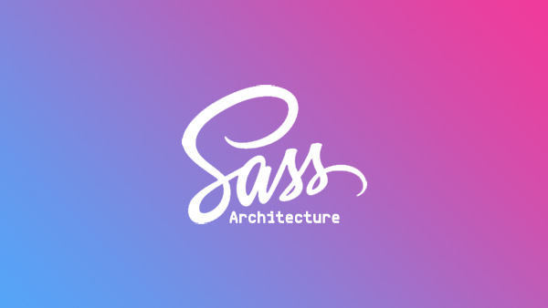
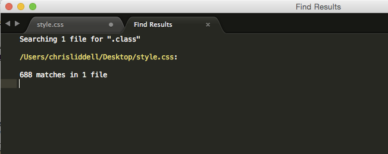

Sass Architecture: The right way?
Investigating and developing a Sass folder structure at the beginning of a project can be really therapeutic...
Front-end 4 Jun 2015 Investigating and developing a Sass folder structure at the beginning of a project can be really therapeutic; like taking a day to arrange your records or getting your toys ready for a battle when you were a kid - I used to spend hours arranging WWF wrestlers in to a 'Royal Rumble' scene; Jeff or Matt on the turnbuckle, The Undertaker hanging someone over the ropes and Vince McMahon in a corner somewhere, crying.
Now that I've got rid of all my wrestlers (thanks, Mum...), this kind of dedication manifests itself in some of the work I do on the web.
This is a good idea for many reasons:
- Traceability - we don't have to search through 10,000+ lines of CSS when a style breaks
- Readability - if a new developer gets involved on the project or it's handed-over to someone else, it's possible for them to understand and edit the theme quickly
- Organised evolution - 'Everything in it's right place'; it allows us to grow our stylesheets as the product or client grows
- It keeps us sane...
So, how to do it then? If you just want to jump right in and use a documented structure, there are quite a few good ones available. Check out SMACSS by Jonathan Snook and ITCSS by Harry Roberts (@csswizardry), or if you're looking for a more all-encompassing product (shipped with useful mixins, grid functions etc.) try Bootstrap or Zurb.
I tend to stay away from the more robust ones like Bootstrap as I like to know and understand exactly what code I'm working with - I'm currently using ITCSS.
If you're looking to create your own from scratch, then, firstly, good luck. Secondly you'll probably want to take these things in to account:
- Relevance - There's no point getting too granular if your site is (and will only ever be) made up of a small number of pages/styles
- Specificity - The order you import partials matters. Make sure the specificity of your selectors increases in the same order the partials are imported
- Use a naming convention and stick to it!
Remember people, have fun with it!